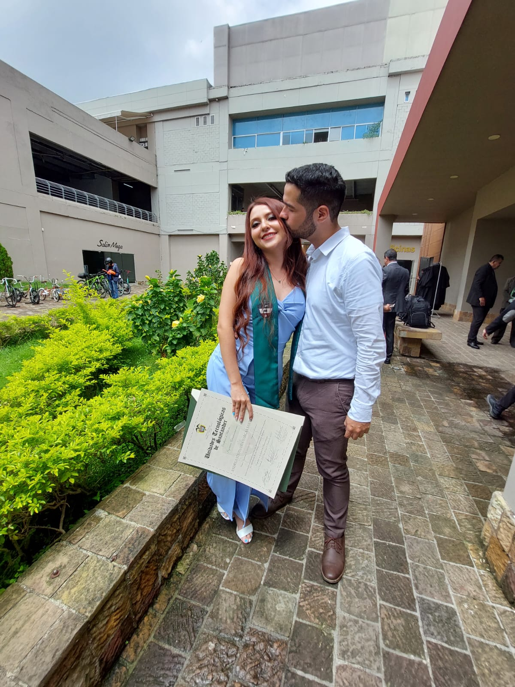
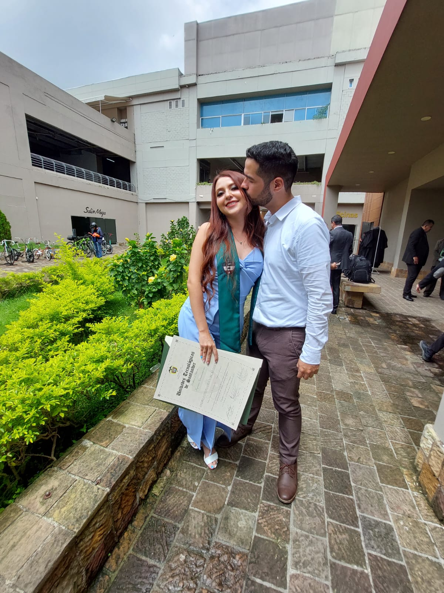

|
|
"Ponme como un sello sobre tu corazón, como una marca sobre tu brazo; Porque fuerte es como la muerte el amor."Cantares 8:6-7 |
|
"Goza de la vida con la mujer que amas, todos los días de la vida de tu vanidad que te son dados debajo del sol, todos los días de tu vanidad; porque esta es tu parte en la vida, y en tu trabajo con que te afanas debajo del sol”.Eclesiastés 9: 9 |
|
|
|
|
Cautivaste mi corazón, hermana y novia mía, con una mirada de tus ojos; con una vuelta de tu collar cautivaste mi corazón.Cantares 4:9 |
Nuestra Historia
Nuestra historia comienza con una simple conversación que, con el tiempo, evolucionó en algo mucho más profundo. Luego de compartir anécdotas, decidí que era momento de invitarte a un paseo para despejar la mente. La semana laboral había sido agotadora y este viaje se presentaba como una oportunidad para desconectar nuestras mentes. Fue en ese ambiente tranquilo y sereno donde tu verdadera personalidad comenzó a brillar.Esta conexión trascendió la casualidad, y nos dimos cuenta de que estábamos destinados a compartir algo más profundo y significativo.
A medida que nuestra relación creció, hubo momentos que quedaron grabados en nuestras memorias de manera indeleble. Uno de ellos fue nuestro emocionante viaje a las Islas de Tintipan. Aquel viaje en moto no solo nos permitió explorar nuevos horizontes, sino que también me brindó la oportunidad de enamorarme aún más de ti. Tus ojos brillantes reflejaban la felicidad y la emoción de aquel momento, y supe que estábamos creando recuerdos que durarían toda la vida. La graduación fue otro de esos momentos que definieron nuestra relación. Ver cómo recogías tu merecido diploma llenó mi corazón de orgullo y alegría.
No encuentro palabras suficientes para describir la emoción que sentí al verte lograr ese hito tan importante en tu vida. Cada vez que recuerdo ese momento, mi corazón late con emoción y gratitud por ser parte de tu vida. Nuestro viaje a México también marcó un punto culminante en nuestra historia. A pesar de las dudas iniciales y los obstáculos financieros, el universo pareció conspirar a nuestro favor, permitiéndonos vivir una experiencia inolvidable juntos. Ese viaje no solo nos permitió explorar un nuevo país, sino que también fortaleció nuestra relación y nos permitió vivir momentos que atesoraremos por siempre.
En retrospectiva, cada etapa de nuestra historia ha estado llena de momentos inolvidables. Desde nuestro primer paseo hasta las emocionantes aventuras en el extranjero, cada experiencia ha contribuido a forjar la conexión profunda que compartimos. Nuestra historia es una prueba de que, a veces, lo que comienza como una casualidad puede transformarse en una historia de amor y felicidad que perdurará a lo largo del tiempo.
 
